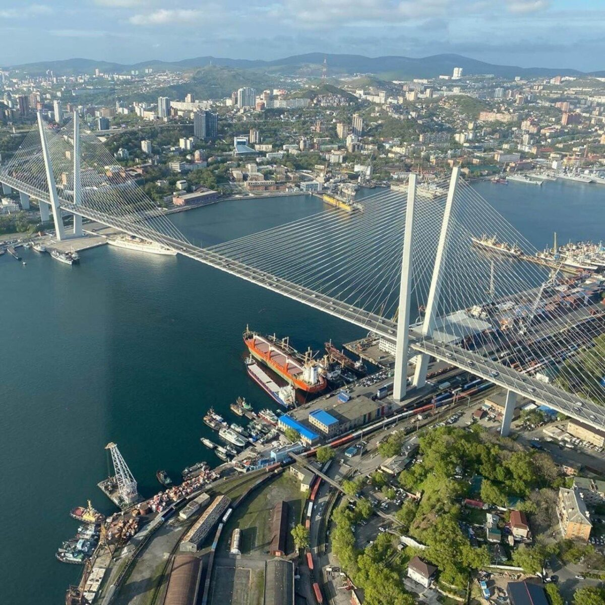

ВладивостокВладивосток — крупнейший город и морской порт на российском Дальнем Востоке, расположенный на побережье Японского моря на полуострове Муравьёва-Амурского. Город был основан 20 июня (2 июля) 1860 года как военный пост Российской империи, а уже в 1880 году официально получил статус города.
Владивосток является административным центром Приморского края и с 2018 года выполняет роль официальной столицы Дальневосточного федерального округа. Город расположен в непосредственной близости от границ с Китаем и Северной Кореей, а также имеет прямые морские пути к ключевым странам Азиатско-Тихоокеанского региона.
Площадь Владивостокского городского округа составляет около 331 км2 (из них сухопутная территория самого города — порядка 600 км2 с учётом входящих в округ островов, таких как Русский и Попова). Сложный сопочный рельеф и изрезанная береговая линия проливов Босфор Восточный и Золотой Рог формируют живописный облик «города на сопках».
По данным на 2026 год, численность населения Владивостока составляет около 590 тысяч человек. Город входит в число ключевых демографических и экономических центров Дальнего Востока, привлекая специалистов, студентов и туристов со всего региона.Владивосток — это важнейший конечный пункт Транссибирской магистрали, крупный научно-образовательный центр с Дальневосточным федеральным университетом (ДВФУ) и главная база Тихоокеанского флота ВМФ России. Город славится своими вантовыми мостами (Русским и Золотым), уникальной морепродуктовой кухней и особым приморским климатом.